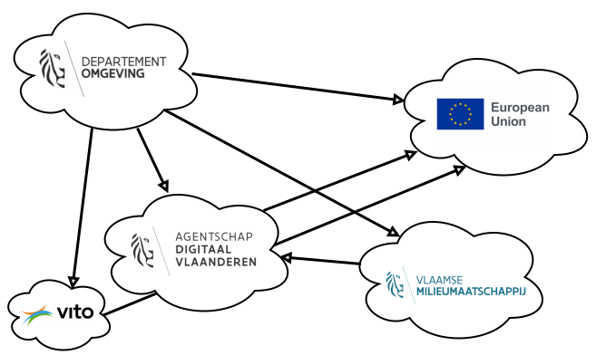

Inhoud
- Introductie Linked Data
- Standaarden en Master Data
- Datamodel
- Versionering
Introductie Linked Data
Beschrijving van informatie
Beschrijf mij wat een exploitant is?
Beschrijving van informatie ...
Beschrijf mij wat een exploitatie is?
Beschrijving van informatie ...
Beschrijf mij wat een milieueffect is?
...
Beschrijf mij wat een organisatie is?
...
Beschrijf mij wat een vestiging is?
Introductie Linked Data
Betekenis van informatie
Beschrijf mij wat een installatie is?
Betekenis van informatie ...
Betekenis van informatie ...
Iedereen kan iets beschrijven, maar enkel de eigenaar van de informatie kan de achterliggende betekenis ervan bepalen.
Introductie Linked Data
Betekenisvol beschrijven van informatie
Beschrijf mij wat een exploitatie is?
Standaarden en Master Data
Linked Data - Web van informatie

Linked Data - Web van informatie ...

Beheer van betekenissen bij standaarden
... want standaarden zijn generiek en algemeen gekend
Beheer van informatie bij de eigenaar
... want de eigenaar kent de betekenis
Datamodel
Standaarden
Drie belangrijke standaarden voor de structuur:
- SSN/SOSA
- PROV-O
- P-PLAN
Meerdere standaarden voor de inhoud:
- DCTerms
- ADMS
- GeoSPARQL
- DBPedia
- ...
Datamodel
Exploitatie als 'Deployment'
SOSA/SSN (vertaling): Beschrijft de inzet van een of meer systemen voor een specifiek doel. De inzet kan plaatsvinden op een platform.
Datamodel
ExploitatieLocatie als 'Platform'
SOSA/SSN (vertaling): Een platform is een entiteit die andere entiteiten host, met name sensoren, actuatoren, bemonsteringsapparaten en andere platforms.
Datamodel
Installatie, Emissiepunt, ... als 'System'
SOSA/SSN (vertaling): Een systeem is een abstractie-eenheid voor infrastructuuronderdelen die procedures implementeren. Een systeem kan componenten hebben, oftewel subsystemen, die op hun beurt weer andere systemen zijn.
Versionering
- Stabiele identificatie
- Over welke (exploitatie) spreken we?
- Geldigheidsduur (van - tot)
- Wanneer was deze versie van de (exploitatie) geldig?
- Creatietijdstip
- Wanneer is deze versie van de (exploitatie) gemaakt?
Versionering
URI's
https://.../id/exploitatie/1234-5678- URI exploitatie met ID
1234-5678 - De laatste versie van de exploitatie
- URI exploitatie met ID
https://.../id/exploitatie/1234-5678/2026-03-24T12:00:00- URI exploitatieversie op
2026-03-24T12:00:00van exploitatie met ID1234-5678 - Een specifieke versie van de exploitatie
- URI exploitatieversie op